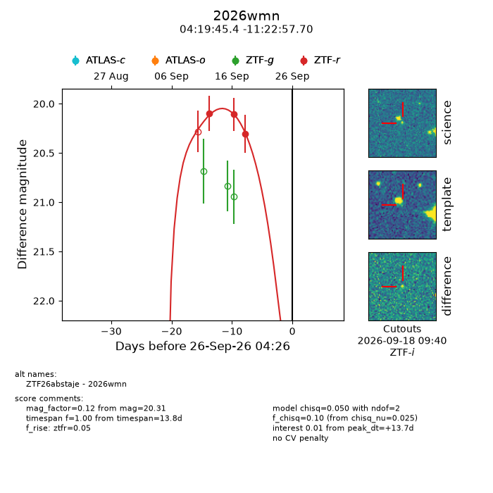
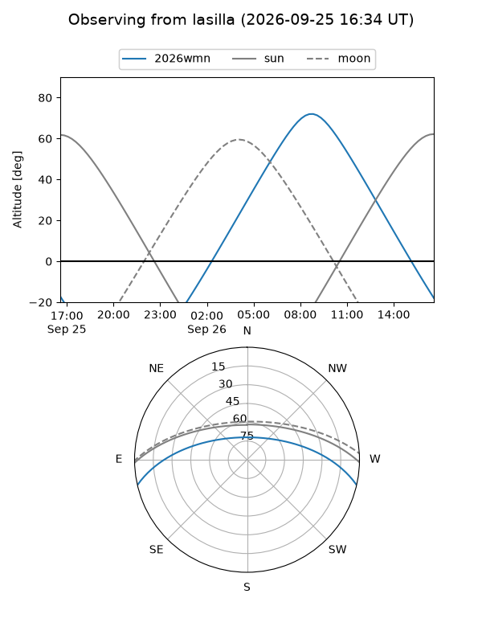
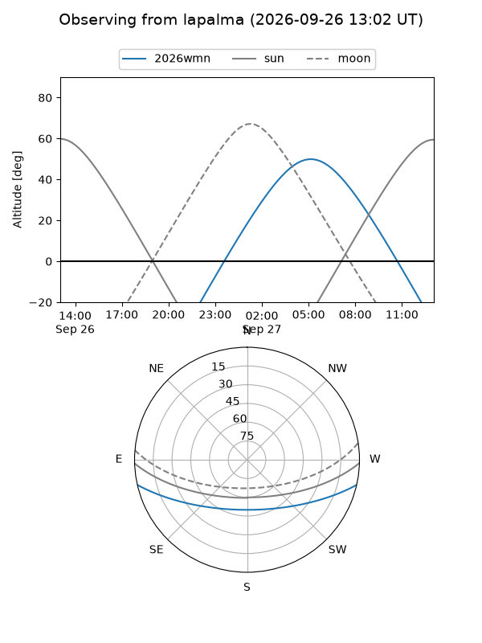
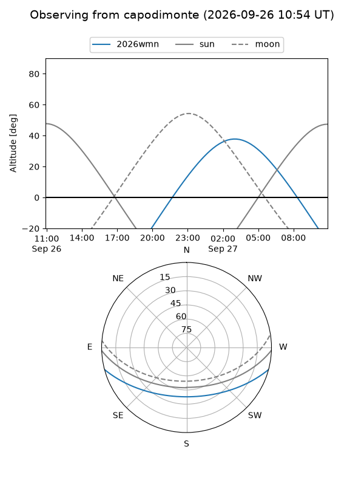
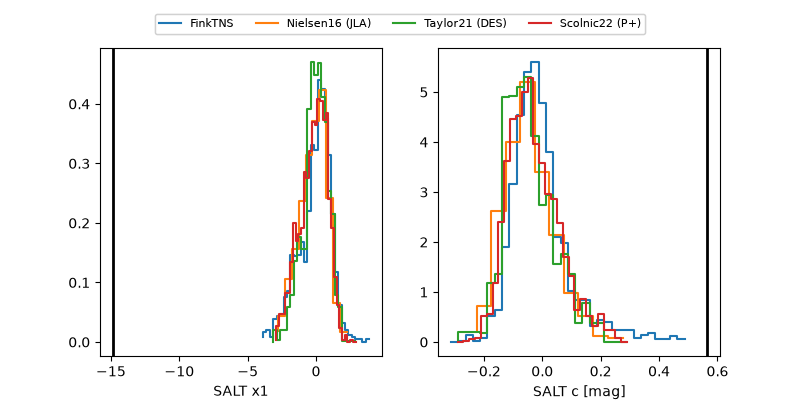

2026wmn
Target 2026wmn at 2026-09-26 16:08
Aliases and brokers:
FINK-ZTF: ztf.fink-portal.org/ZTF26abstaje
Lasair-ZTF: lasair-ztf.lsst.ac.uk/objects/ZTF26abstaje
ALeRCE-ZTF: alerce.online/object/ZTF26abstaje
YSE-PZ: ziggy.ucolick.org/yse/transient_detail/2026wmn
TNS name: wis-tns.org/object/2026wmn
Direct TNS query: direct search
alt names
ZTF26abstaje (ztf,fink_ztf)
2026wmn (tns,yse)
Coordinates:
equatorial (ra, dec) = 64.9393,-11.38269
equatorial (HMS+DMS) = 04:19:45.42,-11:22:57.70
galactic (l, b) = (205.6318,-38.76955)
Flags:
TNS type: nan
peak dt: +14.2
Photometry:
last ztfr=20.31
3 ztfr detections
Lightcurve

Visibility



Additional plots
